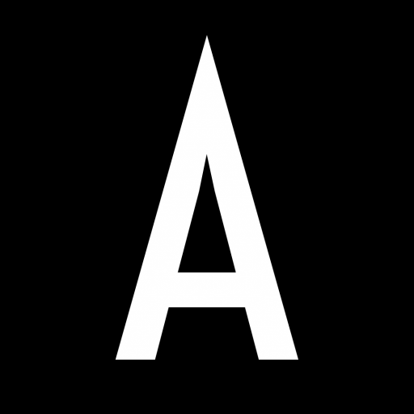

De números a estratégia: uma trajetória construída em cima de dados reais.
Nubank
Analista de dados no time de crédito. Primeiro contato com dados em escala: milhões de transações, decisões em tempo real, cultura orientada a evidências.
Integrou o time de analytics de produto. Trabalhou com métricas de engajamento e retenção, desenvolvendo modelos preditivos usados por squads de produto globais.

Asimov Academy
Lidera projetos de análise e automação para uma das principais edtechs de tecnologia do Brasil. Foco em performance de campanhas, comportamento de alunos e decisões de negócio baseadas em dados.
Projetos que eu já criei

Dashboard
comercial
Centralizou métricas de vendas e inadimplência em um painel único para decisões globais.

Análise
real
Identificou os principais fatores de cancelamento em base de 500k usuários.

Modelos
globais
Criou modelos comportamentais para personalização em escala global.
Pessoas com quem trabalhei
O Lucas tem uma habilidade rara: ele traduz análises complexas em algo que qualquer pessoa da empresa consegue entender e usar. Trabalhar com ele era ganhar clareza. Ele não entregava só os dados — entregava a resposta.

Em pouco tempo, o Lucas estava contribuindo com análises que influenciavam decisões de produto em escala global. Ele tem rigor técnico, mas o que mais impressiona é a velocidade com que entende o contexto de negócio.

Antes eu dependia de feeling para tomar decisões de campanha. Depois que o Lucas estruturou nosso painel de dados, passei a tomar decisões com confiança e velocidade. A diferença é visível nos resultados.

Contratei o Lucas para um projeto pontual de análise de retenção e ele entregou em metade do prazo com o dobro do que eu esperava. É o tipo de profissional que entende o problema antes de abrir qualquer planilha.

O Lucas tem uma habilidade rara: ele traduz análises complexas em algo que qualquer pessoa da empresa consegue entender e usar. Trabalhar com ele era ganhar clareza. Ele não entregava só os dados — entregava a resposta.
Em pouco tempo, o Lucas estava contribuindo com análises que influenciavam decisões de produto em escala global. Ele tem rigor técnico, mas o que mais impressiona é a velocidade com que entende o contexto de negócio.
Antes eu dependia de feeling para tomar decisões de campanha. Depois que o Lucas estruturou nosso painel de dados, passei a tomar decisões com confiança e velocidade. A diferença é visível nos resultados.
Contratei o Lucas para um projeto pontual de análise de retenção e ele entregou em metade do prazo com o dobro do que eu esperava. É o tipo de profissional que entende o problema antes de abrir qualquer planilha.
Seu próximo projeto pode ser guiado por dados.
Se você tem perguntas que os seus dados ainda não responderam, é aqui que a conversa começa.